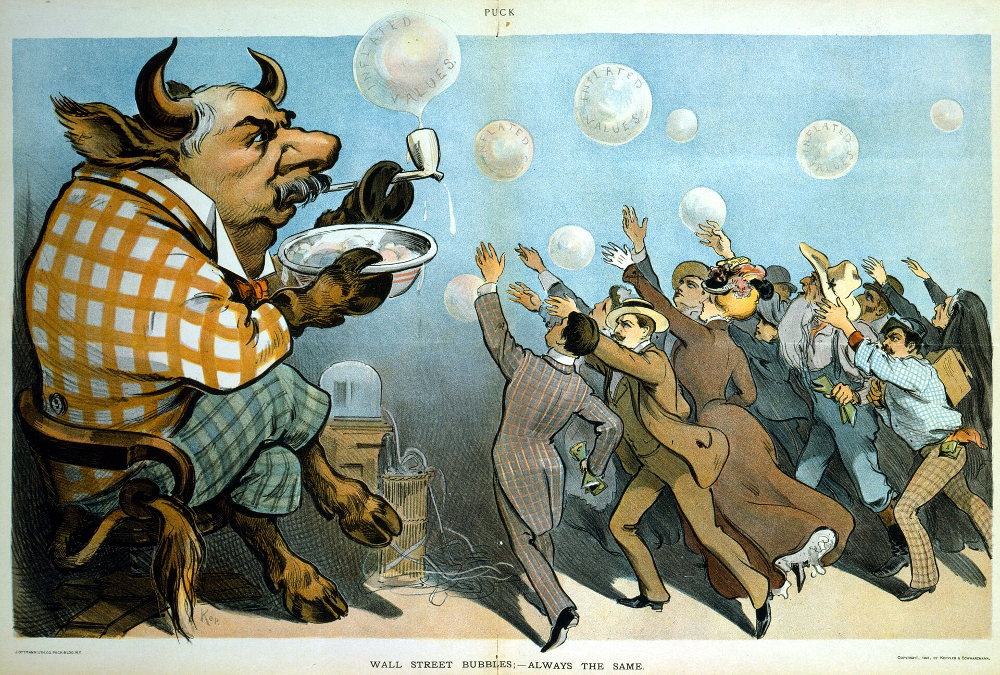
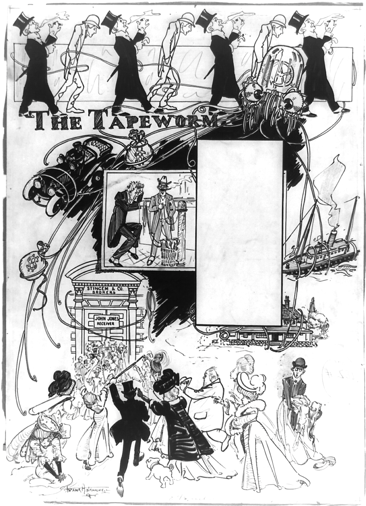

Model önerir, kod karar verir.
GLANCE, yazdığınız işlem planını piyasada uygulayan, aldığı ve almadığı her işlemin gerekçesini yazan bir yapay zekâ ajanı.
Nasıl çalıştığını görKarar: bekle emir açılmadı
4 saatlik trend yukarı, ancak ATR son 20 mumun %82’sinin üzerinde. Bu volatilitede planın izin verdiği stop mesafesi, planda yazan en az 2,0 ödül/risk oranını karşılamıyor. Bu yüzden emir gönderilmedi.
zincir: a9f3…7c21 · önceki kayıt: 4e08…b1d9
Botlara neden güvenilmiyor?
Mevcut trading botları sabit kuralları tekrarlar ve hiçbir şey açıklamaz. Rakamlar da bunu söylüyor.
%88
Decrypt’in 10.388 kişilik trader anketinde (2020) botlara güvenmediğini söyleyenler.
%93
Aynı ankette, ücretli kullanıcılardan ilk ay içinde bırakanlar.
%69
Aynı ankette, botları fazla teknik bulduğunu söyleyenler.
%81
Aynı ankette, botların yeterince iyi olmadığını düşünenler.
3,2 mn
Temmuz 2026 MKK verisine göre Türkiye’de lisanslı platformlarda kripto varlık tutan kişi.
%54
MEXC’in Ekim 2026 raporunda, fonunun bir kısmıyla yapay zekânın işlem yapmasına izin verebileceğini söyleyen yatırımcı.

Ajan nasıl çalışır
Önce planınızı yazıyorsunuz.
Sonra ajan piyasayı tarıyor ve bir öneri üretiyor.
{
"karar" : "bekle",
"sembol": "ETH/USDT",
"stop" : null,
"hedef" : null,
"neden" : "ATR son 20 mumun %82'sinin
üzerinde; planın izin
verdiği stop mesafesi
ödül/risk 2,0'ı
karşılamıyor."
}Biçime uymayan bir çıktı hiçbir zaman işleme dönüşmez.
Her karar, aldığı kadar almadığı da, kayda geçiyor.
| Kayıt | Saat | Varlık | Karar | Gerekçe | Zincir |
|---|---|---|---|---|---|
| #1480 | 02:10 | BTC/USDT | al · geçti | Günlük trend yukarı, ödül/risk 2,6. 0,018 BTC, stop 96.400 USDT. | 4e08…b1d9 |
| #1481 | 02:55 | SOL/USDT | reddedildi | Risk kapısı: varlık planda yok ve tek pozisyon üst sınırı aşılıyor. | 7b31…02af |
| #1482 | 03:40 | ETH/USDT | bekle | Ödül/risk 1,4, planın alt sınırı 2,0. | a9f3…7c21 |

Modelin atlayamadığı kapı
Varsayılan kâğıt hesap
Ajan kâğıt hesapta başlar. Gerçek hesapta işlem, yalnızca kullanıcı açtığında çalışır.
Çekim yetkisiz anahtar
Yalnızca para çekme yetkisi olmayan API anahtarı kabul edilir. Anahtar şifreli saklanır, modele gönderilmez, loglara yazılmaz.
Riski plan belirler
Pozisyon büyüklüğü modelin tercihiyle değil, plandaki risk yüzdesi ve stop mesafesiyle hesaplanır.
Stopsuz emir yok
Risk kapısı her emre stop-loss koyar. Stopu olmayan bir emir borsaya hiç gitmez.
Maruziyet limiti
Aynı anda açılabilecek pozisyon sayısı ve tek pozisyonun büyüklüğü kullanıcının yazdığı planla sınırlıdır.
Her an durdurma
Kullanıcı ajanı istediği an duraklatır. Ajan, tekrarlayan API hatalarında kendini de durdurur.
Pozisyonu risk belirler
Planı siz yazarsınız, kaç adet alınacağını kod hesaplar. Aşağıdaki iki değeri değiştirin: fiş ve risk kapısının kararı anında yeniden hesaplanır.
35.000 ₺
100.000 ₺ bakiyede, işlem başına %1,00 riskle ve 70 ₺’lik stop mesafesiyle hesaplanan pozisyon büyüklüğü.
Risk kapısı: geçti · stop 2.380 ₺’ye kuruldu
Plan
Kurulum
Hesap
Bu iki dönemde ne yapılacak
Kapsam içinde
- Likit varlıklarda spot işlem
- Bir borsa entegrasyonu ve kâğıt işlem
- Pozisyon, kâr-zarar, limit ve karar kaydını gösteren web paneli
- Giriş, çıkış ve risk olaylarında Telegram bildirimi
- Aynı kodu geçmiş veride çalıştıran backtest modülü
- Hash zincirli karar kaydı
Kapsam dışında
- Kaldıraçlı canlı işlem
- Başkasının parasını yönetmek
- Mobil uygulama
- Yüksek frekanslı stratejiler
- Yatırım tavsiyesi ve getiri vaadi
Final demosundan önce GLANCE dört hafta kâğıt hesapta çalışacak. Başarı ölçütü getiri değil: tek bir risk kuralını çiğnememesi. Sonuçlar, aynı risk ayarlarıyla al-tut ve basit bir trend takibi stratejisiyle yan yana raporlanacak.
Ekip
Fikir kendi işlemlerimizden çıktı. Piyasa gün boyu açık; iyi kurulumlar çoğu zaman biz uyurken ya da derste otururken oluşuyor.
İşin büyük kısmı tekrar: trendi, volatiliteyi, fonlamayı ve pozisyon büyüklüğünü yeniden yeniden kontrol etmek. En zor kısmı ise bir zarardan sonra plana sadık kalabilmek.
3Commas ve Cryptohopper gibi hazır botlar sabit kuralı tekrarlıyor ve hiçbir şeyin nedenini söylemiyor. Biz de nedeni yazan bir ajan yapmaya karar verdik.
GLANCE kâr vaat etmiyor. Vaat ettiği tek şey, her kararın ve her reddin gerekçesiyle birlikte kayıtlı olması.
Emre Avcı · Emre Aktürk · Çağıl Sayan
TED Üniversitesi, Bilgisayar Mühendisliği · CMPE 491 Bitirme Projesi I